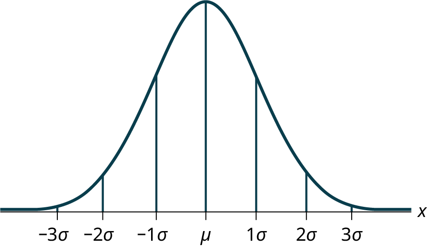

The original, as published: OpenStax, Introductory Statistics 2e, Illowsky, Dean, section 6.1 The Standard Normal Distribution. © Rice University. CC BY-NC-SA 4.0, https://creativecommons.org/licenses/by-nc-sa/4.0/. Imported as published, from https://openstax.org/books/introductory-statistics-2e/pages/6-1-the-standard-normal-distribution
The standard normal distribution is a normal distribution of standardized values called z-scores. A z-score is measured in units of the standard deviation. For example, if the mean of a normal distribution is five and the standard deviation is two, the value 11 is three standard deviations above (or to the right of) the mean. The calculation is as follows:
x = μ + (z)(σ) = 5 + (3)(2) = 11
The z-score is three.
The mean for the standard normal distribution is zero, and the standard deviation is one. The transformation z = produces the distribution Z ~ N(0, 1). The value x in the given equation comes from a normal distribution with mean μ and standard deviation σ.
If X is a normally distributed random variable and X ~ N(μ, σ), then the z-score is:
The z-score tells you how many standard deviations the value x is above (to the right of) or below (to the left of) the mean, μ. Values of x that are larger than the mean have positive z-scores, and values of x that are smaller than the mean have negative z-scores. If x equals the mean, then x has a z-score of zero.
Suppose X ~ N(5, 6). This says that X is a normally distributed random variable with mean μ = 5 and standard deviation σ = 6. Suppose x = 17. Then:
This means that x = 17 is two standard deviations (2σ) above or to the right of the mean μ = 5.
Notice that: 5 + (2)(6) = 17 (The pattern is μ + zσ = x)
Now suppose x = 1. Then: z = = = –0.67 (rounded to two decimal places)
This means that x = 1 is 0.67 standard deviations (–0.67σ) below or to the left of the mean μ = 5. Notice that: 5 + (–0.67)(6) is approximately equal to one (This has the pattern μ + (–0.67)σ = 1)
Summarizing, when z is positive, x is above or to the right of μ and when z is negative, x is to the left of or below μ. Or, when z is positive, x is greater than μ, and when z is negative x is less than μ.
What is the z-score of x, when x = 1 and X ~ N(12,3)?
Some doctors believe that a person can lose five pounds, on the average, in a month by reducing their fat intake and by exercising consistently. Suppose weight loss has a normal distribution. Let X = the amount of weight lost (in pounds) by a person in a month. Use a standard deviation of two pounds. X ~ N(5, 2). Fill in the blanks.
a. Suppose a person lost ten pounds in a month. The z-score when x = 10 pounds is z = 2.5 (verify). This z-score tells you that x = 10 is ________ standard deviations to the ________ (right or left) of the mean _____ (What is the mean?).
a. This z-score tells you that x = 10 is 2.5 standard deviations to the right of the mean five.
b. Suppose a person gained three pounds (a negative weight loss). Then z = __________. This z-score tells you that x = –3 is ________ standard deviations to the __________ (right or left) of the mean.
b. z = –4. This z-score tells you that x = –3 is four standard deviations to the left of the mean.
c. Suppose the random variables X and Y have the following normal distributions: X ~ N(5, 6) and Y ~ N(2, 1). If x = 17, then z = 2. (This was previously shown.) If y = 4, what is z?
c. z = = = 2 where µ = 2 and σ = 1.
The z-score for y = 4 is z = 2. This means that four is z = 2 standard deviations to the right of the mean. Therefore, x = 17 and y = 4 are both two (of their own) standard deviations to the right of their respective means.
The z-score allows us to compare data that are scaled differently. To understand the concept, suppose X ~ N(5, 6) represents weight gains for one group of people who are trying to gain weight in a six week period and Y ~ N(2, 1) measures the same weight gain for a second group of people. A negative weight gain would be a weight loss. Since x = 17 and y = 4 are each two standard deviations to the right of their means, they represent the same, standardized weight gain relative to their means.
Fill in the blanks.
Jerome averages 16 points a game with a standard deviation of four points. X ~ N(16,4). Suppose Jerome scores ten points in a game. The z–score when x = 10 is –1.5. This score tells you that x = 10 is _____ standard deviations to the ______(right or left) of the mean______(What is the mean?).
The empirical rule is also known as the 68-95-99.7 rule.

The mean height of 15 to 18-year-old males from Chile from 2009 to 2010 was 170 cm with a standard deviation of 6.28 cm. Male heights are known to follow a normal distribution. Let X = the height of a 15 to 18-year-old male from Chile in 2009 to 2010. Then X ~ N(170, 6.28).
a. Suppose a 15 to 18-year-old male from Chile was 168 cm tall from 2009 to 2010. The z-score when x = 168 cm is z = _______. This z-score tells you that x = 168 is ________ standard deviations to the ________ (right or left) of the mean _____ (What is the mean?).
b. Suppose that the height of a 15 to 18-year-old male from Chile from 2009 to 2010 has a z-score of z = 1.27. What is the male’s height? The z-score (z = 1.27) tells you that the male’s height is ________ standard deviations to the __________ (right or left) of the mean.
a. –0.32, 0.32, left, 170
b. 177.98 cm, 1.27, right
Use the information in the example to answer the following questions.
From 1984 to 1985, the mean height of 15 to 18-year-old males from Chile was 172.36 cm, and the standard deviation was 6.34 cm. Let Y = the height of 15 to 18-year-old males from 1984 to 1985. Then Y ~ N(172.36, 6.34).
The mean height of 15 to 18-year-old males from Chile from 2009 to 2010 was 170 cm with a standard deviation of 6.28 cm. Male heights are known to follow a normal distribution. Let X = the height of a 15 to 18-year-old male from Chile in 2009 to 2010. Then X ~ N(170, 6.28).
Find the z-scores for x = 160.58 cm and y = 162.85 cm. Interpret each z-score. What can you say about x = 160.58 cm and y = 162.85 cm as they compare to their respective means and standard deviations?
The z-score for x = -160.58 is z = –1.5.
The z-score for y = 162.85 is z = –1.5.
Both x = 160.58 and y = 162.85 deviate the same number of standard deviations from their respective means and in the same direction.
In 2012, 1,664,479 students took the SAT exam. The distribution of scores in the verbal section of the SAT had a mean µ = 496 and a standard deviation σ = 114. Let X = a SAT exam verbal section score in 2012. Then X ~ N(496, 114).
Find the z-scores for x1 = 325 and x2 = 366.21. Interpret each z-score. What can you say about x1 = 325 and x2 = 366.21 as they compare to their respective means and standard deviations?
Suppose x has a normal distribution with mean 50 and standard deviation 6.
Suppose X has a normal distribution with mean 25 and standard deviation five. Between what values of x do 68% of the values lie?
From 1984 to 1985, the mean height of 15 to 18-year-old males from Chile was 172.36 cm, and the standard deviation was 6.34 cm. Let Y = the height of 15 to 18-year-old males in 1984 to 1985. Then Y ~ N(172.36, 6.34).
The scores on a college entrance exam have an approximate normal distribution with mean, µ = 52 points and a standard deviation, σ = 11 points.
“Blood Pressure of Males and Females.” StatCruch, 2013. Available online at http://www.statcrunch.com/5.0/viewreport.php?reportid=11960 (accessed May 14, 2013).
“The Use of Epidemiological Tools in Conflict-affected populations: Open-access educational resources for policy-makers: Calculation of z-scores.” London School of Hygiene and Tropical Medicine, 2009. Available online at http://conflict.lshtm.ac.uk/page_125.htm (accessed May 14, 2013).
“2012 College-Bound Seniors Total Group Profile Report.” CollegeBoard, 2012. Available online at http://media.collegeboard.com/digitalServices/pdf/research/TotalGroup-2012.pdf (accessed May 14, 2013).
“Digest of Education Statistics: ACT score average and standard deviations by sex and race/ethnicity and percentage of ACT test takers, by selected composite score ranges and planned fields of study: Selected years, 1995 through 2009.” National Center for Education Statistics. Available online at http://nces.ed.gov/programs/digest/d09/tables/dt09_147.asp (accessed May 14, 2013).
Data from the San Jose Mercury News.
Data from The World Almanac and Book of Facts.
“List of stadiums by capacity.” Wikipedia. Available online at https://en.wikipedia.org/wiki/List_of_stadiums_by_capacity (accessed May 14, 2013).
Data from the National Basketball Association. Available online at www.nba.com (accessed May 14, 2013).
A z-score is a standardized value. Its distribution is the standard normal, Z ~ N(0, 1). The mean of the z-scores is zero and the standard deviation is one. If z is the z-score for a value x from the normal distribution N(µ, σ) then z tells you how many standard deviations x is above (greater than) or below (less than) µ.
z = a standardized value (z-score)
mean = 0; standard deviation = 1
To find the observed value, x, when the z-scores is known:
x = μ + (z)σ
z-score: z =
Z = the random variable for z-scores
A bottle of water contains 12.05 fluid ounces with a standard deviation of 0.01 ounces. Define the random variable X in words. X = ____________.
ounces of water in a bottle
A normal distribution has a mean of 61 and a standard deviation of 15. What is the median?
X ~ N(1, 2)
σ = _______
2
A company manufactures rubber balls. The mean diameter of a ball is 12 cm with a standard deviation of 0.2 cm. Define the random variable X in words. X = ______________.
X ~ N(–4, 1)
What is the median?
–4
X ~ N(3, 5)
σ = _______
X ~ N(–2, 1)
μ = _______
–2
What does a z-score measure?
What does standardizing a normal distribution do to the mean?
The mean becomes zero.
Is X ~ N(0, 1) a standardized normal distribution? Why or why not?
What is the z-score of x = 12, if it is two standard deviations to the right of the mean?
z = 2
What is the z-score of x = 9, if it is 1.5 standard deviations to the left of the mean?
What is the z-score of x = –2, if it is 2.78 standard deviations to the right of the mean?
z = 2.78
What is the z-score of x = 7, if it is 0.133 standard deviations to the left of the mean?
Suppose X ~ N(2, 6). What value of x has a z-score of three?
x = 20
Suppose X ~ N(8, 1). What value of x has a z-score of –2.25?
Suppose X ~ N(9, 5). What value of x has a z-score of –0.5?
x = 6.5
Suppose X ~ N(2, 3). What value of x has a z-score of –0.67?
Suppose X ~ N(4, 2). What value of x is 1.5 standard deviations to the left of the mean?
x = 1
Suppose X ~ N(4, 2). What value of x is two standard deviations to the right of the mean?
Suppose X ~ N(8, 9). What value of x is 0.67 standard deviations to the left of the mean?
x = 1.97
Suppose X ~ N(–1, 2). What is the z-score of x = 2?
Suppose X ~ N(12, 6). What is the z-score of x = 2?
z = –1.67
Suppose X ~ N(9, 3). What is the z-score of x = 9?
Suppose a normal distribution has a mean of six and a standard deviation of 1.5. What is the z-score of x = 5.5?
z ≈ –0.33
In a normal distribution, x = 5 and z = –1.25. This tells you that x = 5 is ____ standard deviations to the ____ (right or left) of the mean.
In a normal distribution, x = 3 and z = 0.67. This tells you that x = 3 is ____ standard deviations to the ____ (right or left) of the mean.
0.67, right
In a normal distribution, x = –2 and z = 6. This tells you that x = –2 is ____ standard deviations to the ____ (right or left) of the mean.
In a normal distribution, x = –5 and z = –3.14. This tells you that x = –5 is ____ standard deviations to the ____ (right or left) of the mean.
3.14, left
In a normal distribution, x = 6 and z = –1.7. This tells you that x = 6 is ____ standard deviations to the ____ (right or left) of the mean.
About what percent of x values from a normal distribution lie within one standard deviation (left and right) of the mean of that distribution?
about 68%
About what percent of the x values from a normal distribution lie within two standard deviations (left and right) of the mean of that distribution?
About what percent of x values lie between the second and third standard deviations (both sides)?
about 4%
Suppose X ~ N(15, 3). Between what x values does 68.27% of the data lie? The range of x values is centered at the mean of the distribution (i.e., 15).
Suppose X ~ N(–3, 1). Between what x values does 95.45% of the data lie? The range of x values is centered at the mean of the distribution(i.e., –3).
between –5 and –1
Suppose X ~ N(–3, 1). Between what x values does 34.14% of the data lie?
About what percent of x values lie between the mean and three standard deviations?
about 50%
About what percent of x values lie between the mean and one standard deviation?
About what percent of x values lie between the first and second standard deviations from the mean (both sides)?
about 27%
About what percent of x values lie between the first and third standard deviations(both sides)?
Use the following information to answer the next two exercises: The life of wearable fitness devices is normally distributed with mean of 4.1 years and a standard deviation of 1.3 years. A wearable fitness device is guaranteed for three years. We are interested in the length of time a wearable fitness device lasts.
Define the random variable X in words. X = _______________.
The lifetime of a wearable fitness device measured in years.
X ~ _____(_____,_____)
Use the following information to answer the next two exercises: The patient recovery time from a particular surgical procedure is normally distributed with a mean of 5.3 days and a standard deviation of 2.1 days.
What is the median recovery time?
What is the z-score for a patient who takes ten days to recover?
c
The length of time to find a parking space at 9 A.M. follows a normal distribution with a mean of five minutes and a standard deviation of two minutes. If the mean is significantly greater than the standard deviation, which of the following statements is true?
The heights of the 430 National Basketball Association players were listed on team rosters at the start of a recent season. The heights of basketball players have an approximate normal distribution with mean, µ = 79 inches and a standard deviation, σ = 3.89 inches. For each of the following heights, calculate the z-score and interpret it using complete sentences.
The systolic blood pressure (given in millimeters) of males has an approximately normal distribution with mean µ = 125 and standard deviation σ = 14. Systolic blood pressure for males follows a normal distribution.
Kyle’s doctor told him that the z-score for his systolic blood pressure is 1.75. Which of the following is the best interpretation of this standardized score? The systolic blood pressure (given in millimeters) of males has an approximately normal distribution with mean µ = 125 and standard deviation σ = 14. If X = a systolic blood pressure score then X ~ N (125, 14).
Height and weight are two measurements used to track a child’s development. The World Health Organization measures child development by comparing the weights of children who are the same height and the same gender. In 2009, weights for all 80 cm girls in the reference population had a mean µ = 10.2 kg and standard deviation σ = 0.8 kg. Weights are normally distributed. X ~ N(10.2, 0.8). Calculate the z-scores that correspond to the following weights and interpret them.
During a certain year, 1,475,623 students heading to college took the SAT. The distribution of scores in the math section of the SAT follows a normal distribution with mean µ = 520 and standard deviation σ = 115.
Let X = an SAT math score and Y = an ACT math score. Use the z-score formula.
Standard Normal Distribution a continuous random variable (RV) X ~ N(0, 1); when X follows the standard normal distribution, it is often noted as Z ~ N(0, 1).
z-score the linear transformation of the form z = ; if this transformation is applied to any normal distribution X ~ N(μ, σ) the result is the standard normal distribution Z ~ N(0,1). If this transformation is applied to any specific value x of the RV with mean μ and standard deviation σ, the result is called the z-score of x. The z-score allows us to compare data that are normally distributed but scaled differently.